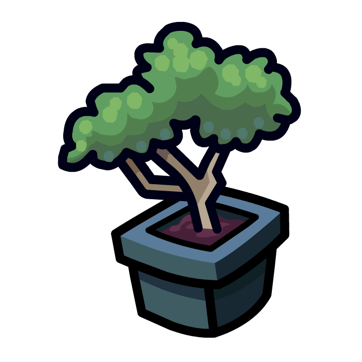

 Plant Pi
Home
Terminal
Logs
Settings
Home
Force Update
Last 30 Minutes
Last Day
Last Week
Last Month
All Time
Current Temperature (°F)
Current Humidity (%)
Current Moisture Level
Average Temperature:
Average Humidity:
Average Watering Interval:
Terminal
Logs
API Logs
Plant Pi Logs
Error Logs
Settings
Perform System Checks
Check Server Access
Test Services
Test Sensors
Restart Server
Restart Plant Pi
Shutdown Server
Shutdown Plant Pi
Log API
Log Plant Pi
Log Errors